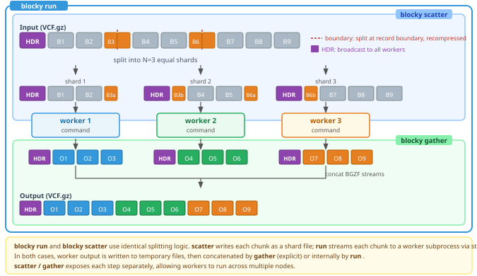

Parallelise processing of bgzipped files by splitting along BGZF block boundaries and piping each shard through a tool pipeline concurrently. Works with any BGZF+TBI/CSI file: VCF, BCF, BED, GFF, GTF, TSV, or any newline-delimited bgzipped format.

A bgzipped file is a sequence of independent BGZF blocks, each containing up to 64 KiB of uncompressed data. Blocks are self-contained at the compression level, but records (VCF rows, BCF records, BED lines, etc.) routinely span multiple blocks — so each shard boundary must land on a record boundary inside one of those blocks, not on the block boundary itself.
When a TBI or CSI index is present, blocky reads record virtual
offsets from it to locate split points directly. With only a GZI
(block-start) index, or no index at all, blocky scans the BGZF blocks
sequentially and decompresses each candidate boundary block to find a
newline — this works for any bgzipped text file but is slightly slower.
BCF files always require a CSI index (BCF records have no in-band
delimiter to scan for). With blocky scatter, each shard
file receives a recompressed header and a recompressed boundary block;
all blocks in between are byte-copied directly from disk without
decompression. With blocky run, the shard data is
decompressed and streamed to the worker subprocess via stdin.
Only one block per split point is ever decompressed and recompressed (to slice it at the record boundary). For a file split into N shards, that is N-1 boundary blocks regardless of file size.
Download the latest Linux x86_64 binary from the latest release:
curl -fsSL https://github.com/jemunro/blocky/releases/latest/download/blocky -o blocky
chmod +x blocky
mv blocky /usr/local/bin/ # or anywhere on your PATHThe binary is statically linked and ~400 kB.
Pre-built images with common bioinformatics tools are available from GHCR:
docker pull ghcr.io/jemunro/blocky/blocky-bcftools:latest# Split a VCF into 8 shards
blocky scatter -n 8 -o output_{}.vcf.gz input.vcf.gz
# Filter in parallel (4 workers, each processing 2 shards sequentially)
blocky run -n 4 -m 2 -o filtered.vcf.gz input.vcf.gz \
::: bcftools view -i "GT='alt'" -Oz
# Multi-stage pipeline: chain tools with extra `:::` separators
# (each shard runs `bcftools view ... | bcftools norm ... | bcftools annotate ...`)
blocky run -n 8 -o out.vcf.gz input.vcf.gz \
::: bcftools view -i "GT='alt'" -Ou \
::: bcftools norm -f ref.fa -Ou \
::: bcftools annotate -a annot.vcf.gz -c INFO -Oz
# Tool-managed output: tool writes per-shard files using {} placeholder
blocky run -n 8 input.vcf.gz \
::: bcftools view -i "GT='alt'" -Oz -o output.{}.vcf.gz
# Process a BED file
blocky run -n 4 --clamp -o out.bed.gz input.bed.gz ::: cat
# Compress/decompress (like bgzip)
blocky compress input.vcf
blocky decompress input.vcf.gzscatterSplit input into N shards. Each shard is a valid standalone file with its own header.
blocky scatter -n <n_shards> -o <output> [options] <input>| Flag | Description |
|---|---|
-n/--n-shards |
Number of shards (required, >= 1) |
-o/--output |
Output path template (required). Use {} for shard
number. |
-t/--max-threads |
Max threads for scatter (default: min(n, 8)) |
--scan |
Ignore index, scan all BGZF blocks (not valid for BCF) |
--clamp |
Reduce -n if fewer split points available (instead of erroring) |
-v/--verbose |
Print progress to stderr |
blocky scatter -n 4 -o output.{}.vcf.gz input.vcf.gz
# -> output.1.vcf.gz output.2.vcf.gz output.3.vcf.gz output.4.vcf.gz
blocky scatter -n 4 -o output.bcf input.bcfIndex priority: CSI > TBI > GZI > block scan. BCF requires a CSI index. VCF/text uses whichever index is found; if none, blocks are scanned directly (with a warning).
runScatter and pipe each shard through a tool pipeline in parallel. Workers pull shards from a shared queue; a concat thread reassembles output in order.
A pipeline can have any number of stages — separate them with
::: (or ---). Stages are joined with
| and executed via sh -c, so each shard runs
its own copy of the full pipeline:
blocky run -n <n_workers> [options] <input> ::: <cmd1> [args...] [::: <cmd2> [args...] ...]| Flag | Description |
|---|---|
-n/--n-workers |
Number of concurrent worker pipelines (required, >= 1) |
-m/--max-shards-per-worker |
Max shards each worker processes sequentially (default: 1) |
-o/--output |
Output path (optional; absent -> stdout) |
-u/--uncompressed |
Force uncompressed file output |
--discard |
Discard subprocess stdout (tool manages own output) |
--discard-stderr |
Discard subprocess stderr |
-t/--max-threads |
Max scatter threads (default: min(n-workers, 8)) |
--scan |
Ignore index, scan all BGZF blocks |
--clamp |
Reduce shard count if fewer split points available |
--no-kill |
On failure, let sibling shards finish (default: kill them) |
-v/--verbose |
Print per-shard progress to stderr |
Total shards = n * m. Each worker processes up to
m shards sequentially. The concat thread writes shard
outputs to -o (or stdout) in order, stripping duplicate
headers from shards 2..N.
# 4 workers, 2 shards each = 8 total shards
blocky run -n 4 -m 2 -o filtered.vcf.gz input.vcf.gz \
::: bcftools view -i "GT='alt'" -Oz
# Multi-stage pipeline: each `:::` adds another `|`-connected stage
blocky run -n 8 -o out.vcf.gz input.vcf.gz \
::: bcftools view -i "GT='alt'" -Ou \
::: bcftools norm -f ref.fa -Ou \
::: bcftools annotate -a annot.vcf.gz -c INFO -Oz
# Output to stdout (no -o)
blocky run -n 4 input.vcf.gz ::: bcftools view -Ov | wc -l
# Force uncompressed output
blocky run -n 4 -u -o filtered.vcf input.vcf.gz \
::: bcftools view -OvSubprocess stdin is always decompressed (raw bytes). The interceptor thread detects the subprocess output format (BGZF or uncompressed) and handles header stripping and recompression automatically.
gatherConcatenate pre-existing shard files into a single output. Raw block copy with header stripping on shards 2..N.
blocky gather [-o <output>] [options] <shard1> [<shard2> ...]| Flag | Description |
|---|---|
-o/--output |
Output path (optional; absent -> stdout) |
-v/--verbose |
Print progress to stderr |
blocky gather -o merged.vcf.gz shard_*.vcf.gz
blocky gather shard_*.vcf.gz | bcftools statsFor VCF/BCF, the #CHROM line is validated byte-for-byte
across all shards before writing. A mismatch exits with code 1 and no
partial output is written.
compress /
decompressBGZF compression and decompression using blocky's libdeflate engine.
Output is compatible with bgzip and htslib.
Matches bgzip behavior: the input file is removed after
successful operation.
blocky compress [-c] [file]
blocky decompress [-c] [file]| Flag | Description |
|---|---|
-c/--stdout |
Write to stdout, keep original file |
blocky compress data.vcf # -> data.vcf.gz (removes data.vcf)
blocky decompress data.vcf.gz # -> data.vcf (removes data.vcf.gz)
cat data.vcf | blocky compress -c | blocky decompress -c # pipe modeErrors if the output file already exists. Warns if compressing an already-compressed file or decompressing a non-compressed file.
These subcommands are included for convenience, e.g. on systems without htslib.
{} placeholder and
--discard{} in the tool command is replaced with the zero-padded
shard number. This works in all modes -- you can use {} for
auxiliary output files (reports, logs) while still capturing stdout via
-o.
# Tool manages its own output files -- use --discard to drop stdout
blocky run -n 8 --discard input.vcf.gz \
::: bcftools view -Oz -o output.{}.vcf.gz
# {} for auxiliary files, stdout captured to -o
blocky run -n 4 -o annotated.vcf.gz input.vcf.gz \
::: vep --stats_file report.{}.htmlTo pass a literal {} to a tool, escape as
\{} (use single quotes: '\{}').
-o |
--discard |
Mode |
|---|---|---|
| Yes | No | File output (concat thread writes to -o) |
| No | No | Stdout output |
| No | Yes | Discard stdout (tool manages own output) |
| Yes | Yes | Error (mutually exclusive) |
{} in the -o template is replaced with the
zero-padded shard number:
-o output.{}.vcf.gz, -n 8 -> output.1.vcf.gz ... output.8.vcf.gz
-o /results/{}/out.bcf -> /results/1/out.bcf ... /results/4/out.bcfParent directories are created automatically.
| Format | Index | Notes |
|---|---|---|
bgzipped VCF (.vcf.gz) |
TBI, CSI, or GZI | Auto-scan if no index (with warning) |
BCF (.bcf) |
CSI required | No scan fallback |
BED, GFF, GTF, TSV (.bed.gz, .gtf.gz,
etc.) |
TBI, CSI, or GZI | #-prefixed header lines stripped automatically |
Format is detected from file content (magic bytes), not from
extension. Any BGZF file with #-prefixed headers works out
of the box.
::: (or ---) separates pipeline stages.
Stages are joined with | and executed via
sh -c.
blocky run -n 8 -o out.vcf.gz input.vcf.gz \
::: bcftools view -i "GT='alt'" -Ou \
::: bcftools view -s Sample -Ozblocky scatter, middle BGZF blocks are byte-copied
at disk bandwidth with no decompression; blocky run
decompresses all blocks to stream raw bytes to workers-n workers pull from a shared shard
queue, keeping all cores busy even when shard processing times vary-u is set-n
with the tool's own threadingbcftools index input.bcf). No
scan fallback for BCF.{} for tool-managed output).Pull requests are welcome. Please follow these guidelines:
tests/test_*.nim
file. Bug fixes should add a regression test where practical.nimble test (requires bcftools,
bgzip, and tabix on PATH).git clone --recurse-submodules https://github.com/jemunro/blocky
cd blocky
nimble build # debug build
nimble release # release build (optimised, stripped)
nimble test # run all tests
nim c -r tests/test_scatter.nim # run a single test fileBuild requirements: Nim >= 2.0, cmake, a C compiler (gcc or clang).
Test requirements: bcftools,
bgzip, tabix (from htslib). Test fixtures are
generated automatically on first run via
tests/generate_fixtures.sh.
Blocky started as a Python prototype and was built into a portable, statically-linked Nim binary using Claude Code.